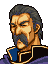

Opening

ナンナ様！

エーヴェル・・・
よかった・・・
ご無事でしたのね・・・
おけがはありませんか？
ええ・・・
私は大丈夫だけど・・・
マリータが・・・
マリータ！？
マリータはどうなったのです？
私にもわからないの
この城につくなり引き離されて・・・
・・・レイドリック！ どういうこと？
娘にも会わせてくれると・・・
だましたのですか？

だましてなどおらんさ
お前の娘ともすぐに会わせてやる
もっとも・・・
エーヴェル！
むこうに剣士が！
えっ！
(The gladiators appear)
・・・もっとも
ワシの剣闘士たちを倒せたらの話だがな
・・・・・・
どうした、ほれ
剣闘士が迫ってきておるぞ
エーヴェル・・・
・・・ナンナ様、下がってください
危険です！
Enemy turn 1 Enter Veld!
ベルド司教、お待たせしましたな

ふっ
貴公もヒマを
もてあましているようじゃな
しかし
先ほどの話とは
ちと、おもむきがことなる気もするが？
フフ・・・
楽しみは後ほど、ということで・・・
なるほどな・・・楽しみにしておるぞ
すべては、あの女剣士の腕次第・・・
うわさ通りの腕であってほしいものですな
クックックッ・・・
When Eyvel is captured
なんだ、口ほどにもない
もう終わりか

この女、いかがいたしましょう
レイドリック
殺すにはおよぶまい
わしにまかせよ
な、なに・・・
Before the arena door opens, if Nanna is alive and Eyvel has been petrified
・・・騎士フィンの娘の方は
いかがしましょうか？
ふむ・・・そうだな・・・あの娘は放っておけ
どうせこの城からは逃げられんだろう
それより
その娘、これからどうするかが楽しみだ
はっ
・・・エーヴェル・・・
When a gladiator is defeated or Leif's army nears the arena door
ふむ
聞きしに勝る腕前だな・・・
気に入ったぞ、ほうびをやろう
なにっ！・・・
ふっ・・・
おい！ 例の者をこれへ！
マリータ・・・？

・・・・・・
If Nanna is alive
マリータ！ マリータ！
無事だったのね！ よかった！
ナンナ様、待って！
え？
・・・・・・
マリータ・・・返事をしなさい・・・
・・・・・・コロス・・・！！
・・・コロス・・・コロス・・・コロス・・・
コノケンデ・・・ミンナ・・・ミンナ・・・
ミンナコロス！！
・・・マリータ・・・あなた・・・
どうかな、エーヴェルとやら
久しぶりの愛する娘との対面は、ん？
・・・マリータに何をしたのです？
何もしておらんさ
それどころか
その娘が逃げ出そうと
スキをねらっておったから
その剣を与えて
チャンスをやったくらいだ
それも
宝物室の中にあった
とびっきりのやつをな
・・・そうそう
確か、あんこくの剣とかいったな
あんこくの剣・・・魔剣ね・・・
マリータを狂戦士にしようっていうの？
ほう
そんな呪いがあったのか
いや、これは初耳だ
ふざけないで！
・・・よくも・・・よくもマリータを・・・
そんなことより
わが身の心配をしたらどうだ？
なにせ、その、あんこくの剣
剣としての威力は抜群だからなあ
わっはっはっ・・・
レイドリック・・・
マリータ、目を覚ましなさい！
・・・・・・
Enemy phase two turns after Mareeta appears
どういうことだ？
あの娘、あんこくの剣を持たせたのに
なぜ、このように苦戦する？
フム・・・
あんこくの剣は、あの娘を
完全に支配してはおらぬようじゃな
なんですと！
バカな！
あんな小娘ごときに・・・
母親を思う心が
剣先を鈍らせておるのであろうな
魔剣の力に必死でたえておる・・・
ほれ
貴公にはあの涙が見えぬか？
Mareeta: capture quote
ク・・・ハナセ・・・ハナセ・・・
マリータ、ごめんね・・・
グッ！
なに・・・気絶させただと・・・
そっ、そんなばかな・・・
・・・レイドリック
貴様だけは絶対に許さない・・・
ば、ばけものか
この女は・・・
Mareeta: defeat quote
・・・・・・
(Mareeta dies and vanishes from the map)
・・・マリータ・・・ごめんね・・・
ば、ばかな・・・
あんこくの剣に勝つとは・・・
・・・レイドリック
貴様だけは絶対に許さない・・・
ば、ばけものか
この女は・・・
When the arena door is opened
Eyvel and Nanna both alive

ナンナ！ 無事なのか！
リーフさま！
エーヴェルを助けて！
これ以上は無理です
わかった
あとはぼくたちにまかせろ！
エーヴェル！ 大丈夫なのか？
リーフ王子！ 来てくれたのですね！
ありがとう
ナンナを守ってくれて
まだ油断はできません
マリータが・・・
マリータ？
マリータがいったいどうしたんだ？
If Eyvel is alive and Nanna is dead
エーヴェル！ 大丈夫なのか？
リーフ様・・・ごめんなさい・・・
ナンナ様を・・・せっかく会えたのに
まさか！？
ナンナが・・・
そんな、そんなばかな・・・
If Eyvel is alive and Nanna has been captured
エーヴェル！ 大丈夫なのか？
リーフ様・・・ごめんなさい・・・
ナンナ様が・・・せっかく会えたのに
また、敵に捕えられて・・・
ナンナが・・・
いや、無事でいてくれるならそれでいい
いつか、必ず取り戻すさ！
それと、マリータが・・・
マリータ？
マリータがいったいどうしたんだ？
If Eyvel is petrified and Nanna is alive
リーフさま！
ナンナ！ 無事だったのか！
ええ、私はなんとか・・・
エーヴェルは？
それが・・・
(Nanna's window closes)
ああっ！
エーヴェル、エーヴェル！
なんてことだ
こんなことって・・・
せっかく、ここまで来たのに・・・
If Eyvel is petrified and Nanna is dead or captured
・・・ここにもいない
あの情報は
あやまりだったのだろうか・・・
あっ！ あれは・・・
ああっ！
エーヴェル、エーヴェル！
なんてことだ
こんなことって・・・
せっかく、ここまで来たのに・・・
な、なんだと
あやつら
地下牢から逃げ出したのか！？
と、捕えよ！ い、いや、殺してしまえ！！
もし逃げられでもしたら
ワシの責任となってしまうではないか
始末せよ！
全員殺してしまえ！！
If Mareeta was captured or killed: continuation of 'When the arena door is opened' A frightened Raydrik
だ、誰でもよい
あの女をなんとかしろ！
わしらはあの女に
皆殺しにされてしまうぞ！
レイドリック
なにをあわてているのじゃ
心配いらぬ、わしに任せよ
な、なに！？・・・
ほぉ・・・これはお見事
聞きしに勝るお力ですな・・・
フフフ・・・
これはまた
見事な女剣士の石像だ・・・
クックックッ
よし、これで恐れるものはない
ゆけ、やつらを生かして帰すな！
When Nanna escapes
エーヴェル・・・
私のために・・・
ごめんなさい・・・
When Leif escapes
エーヴェル、ぼくは必ず戻ってくる！
もっともっと強くなって
必ずここに戻ってくる！
だから・・・
だから・・・